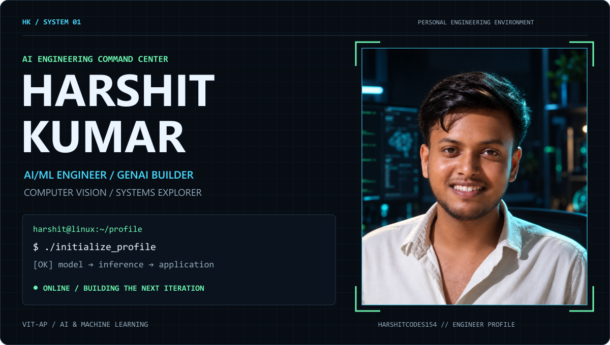
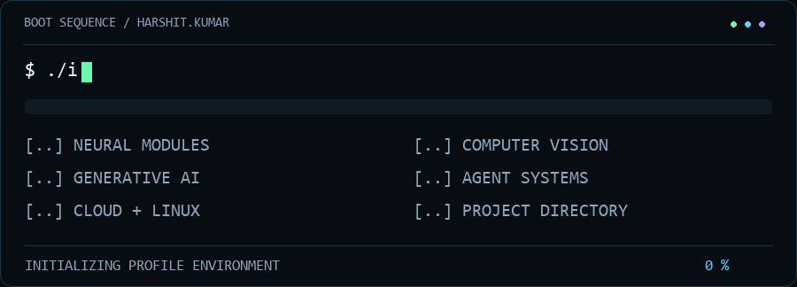
$ whoami
I'm Harshit Kumar, a pre-final-year B.Tech student in Computer Science and Engineering, specializing in Artificial Intelligence & Machine Learning at VIT-AP University.
I build around the full AI application loop: understanding data, training models, inspecting predictions, exposing APIs, and creating interfaces people can use. My projects span computer vision, generative AI, software engineering, and cloud-backed applications. Linux, agentic systems, game development, hackathons, and experimental engineering keep me exploring beyond a single stack.
From wafer maps to satellite hotspots — turning signals into useful software.
$ cat /etc/harshit/current_focus
Building: AI systems · Computer vision · Generative AI · Software engineering
Exploring: Agentic systems · Linux · Cloud · Game development · System design
$ ls -la ~/projects/
01 / WAFER-GPT
Wafer-map classification with an explanation layer. A TensorFlow/Keras CNN classifies nine wafer-pattern categories; Grad-CAM highlights model attention, while Gemini adds contextual interpretation and follow-up chat. A FastAPI backend connects the model to a browser interface.
Wafer image → grayscale quantization → 224×224 RGB → CNN → class + Grad-CAM → FastAPI → browser result
Prediction context → Gemini → interpretation / chat
Stack: Python · TensorFlow/Keras · OpenCV · FastAPI · Gemini · HTML/CSS/JavaScript · Docker
Deployment configuration: Vercel frontend · Railway API
Achievement: Hackathon winner — WAFER-GPT, Android Club, VIT-AP.
Implementation notes
The preprocessing pipeline maps wafer pixels to three grayscale levels, resizes with nearest-neighbor interpolation, converts to RGB, and normalizes model input. Classification and Grad-CAM are separate from the language-model interpretation. The interface URL is reachable; the configured backend health endpoint returned 404 during inspection. No accuracy or service-uptime claim is implied.
02 / ThermoWatch-AI
Satellite hotspots with facility context. A geospatial pipeline clusters NASA FIRMS detections, associates nearby OpenStreetMap facilities, classifies likely source types, and prioritizes results using a heuristic risk score. The Streamlit dashboard provides Folium maps and CSV/PDF exports, with Open-Meteo weather context.
VIIRS detections → DBSCAN clusters → OSM facility attribution → source classifier → risk score → map / report
Stack: Python · pandas · NumPy · scikit-learn · Streamlit · Folium · OpenStreetMap · Open-Meteo
Architecture: Data ingestion → spatial attribution with BallTree → classification → dashboard. Risk prioritization is displayed in the application; external emergency-alert delivery is not claimed.
03 / Operation Sindoor
A fictional air-defense / aerial-combat game concept. Fighter aircraft, radar sweeps, enemy threats, missile warnings, target locking, missions, weather, and a cinematic HUD shape the intended experience.
Mission → radar awareness → threat / lock feedback → aerial encounter → mission outcome
Design focus: Flight, radar, mission feedback, and atmosphere. This is the gameplay concept; implementation architecture and engine are not asserted here.
04 / RazorRecover
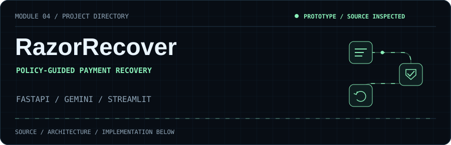
A payment-recovery decision prototype. A Streamlit dashboard calls FastAPI services for risk analysis, root-cause checks, Gemini-assisted decisions, policy validation, and an audit trail. Recovery actions operate on simulated, in-memory transactions.
Demo payment → risk + root cause → Gemini / fallback → guardrails → simulated retry → audit
Stack: Python · FastAPI · Pydantic · Gemini · Streamlit · pandas
Status: Prototype with simulated recovery; no real payment settlement or recovered-revenue claim.
05 / Ashoka Cooling Point
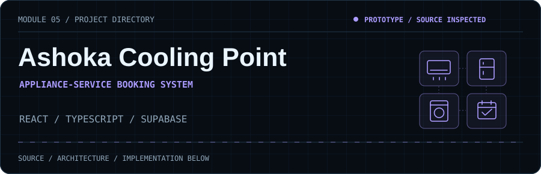
A service-booking application for appliance repair. A guided booking flow connects authentication, customer bookings, and dashboards, with an administrative technician-assignment interface.
React interface → Supabase authentication → bookings + profiles → service dashboard
Stack: TypeScript · React · Vite · Tailwind CSS · Supabase · PostgreSQL
Deployment configuration: Netlify build settings are included in the repository.
$ neofetch --engineering
| Layer | Technologies and working areas |
|---|---|
| Programming | Python · Java · C · SQL · JavaScript · TypeScript |
| AI / ML | TensorFlow · Keras · scikit-learn · OpenCV · CNNs · Grad-CAM · Computer Vision |
| Generative AI | Gemini API · LLM applications · Prompt engineering · Agentic workflows |
| Backend | FastAPI · Pydantic · REST APIs · Node.js · Express |
| Interfaces | React · Streamlit · HTML · CSS · Vite · Tailwind CSS |
| Data / Spatial | pandas · NumPy · PostgreSQL · Supabase · Folium · DBSCAN · BallTree |
| Cloud | Google Cloud · Vertex AI · Cloud Run · AWS EC2 / S3 / Lambda / IAM / API Gateway |
| Environment / Tools | Linux · Git · GitHub · Docker |
| Game development | Fictional aerial-combat design · Radar / HUD concepts · Mission systems |
Repository implementations and resume-supported skills inform this stack. Cloud and agentic learning include Google Gen AI Academy work; project-specific stacks are listed above.
$ trace --from data --to deployment
Data → Model → Inference → API → Application → Deployment
My engineering workflow: inspect the inputs, evaluate behavior, expose useful interfaces, and iterate from what the system actually does.
$ ./achievements --verbose
| Record | Outcome / context |
|---|---|
| WAFER-GPT / Android Club Hackathon, VIT-AP | Winner; built and presented the wafer-defect intelligence project. |
| Null Chapter CTF | Winner; hands-on competition challenges. |
| Google Gen AI Academy — APAC 2026 | Participation; Tracks 1 & 2, GenAI, agentic workflows, and Google Cloud. |
| PixelHack / DAG Club, VIT-AP | Hackathon participation and game-development exploration. |
| Technical Expo | WAFER-GPT presentation and technical project demonstration. |
$ ./ctf_status
Null Chapter CTF — Winner. A competition milestone in problem-solving and security challenges.
$ git status · GIT ACTIVITY / CONTRIBUTION MATRIX
harshit@github:~/activity $ git status --short
REPOSITORIES ...... PUBLIC SNAPSHOT
CONTRIBUTIONS ..... TRACKING GITHUB DATA
REFRESH ........... DAILY WORKFLOW INCLUDED
How this activity display stays honest
The calendar preserves GitHub's familiar week/day grid and uses actual public contribution-page counts. It is a dated snapshot, refreshed by the included workflow after installation. Streaks count consecutive dates with at least one contribution; the longest streak covers the displayed window. Language shares use GitHub Linguist bytes across public, non-fork repositories, not proficiency or time spent. GitHub contribution counts are broader than commits.
Inspect the data · Refresh workflow · Open the live GitHub profile
$ cat education.txt
B.Tech — Computer Science and Engineering
Specialization: Artificial Intelligence & Machine Learning
Stage: Pre-final year
University: VIT-AP University
$ resume --open
Open the original supplied PDF
$ contact --open
Mail: harshitkumar7212@gmail.com
LinkedIn: Harshit Kumar
GitHub: @Harshitcodes154
$ sudo ./harshit_profile --deep-scan
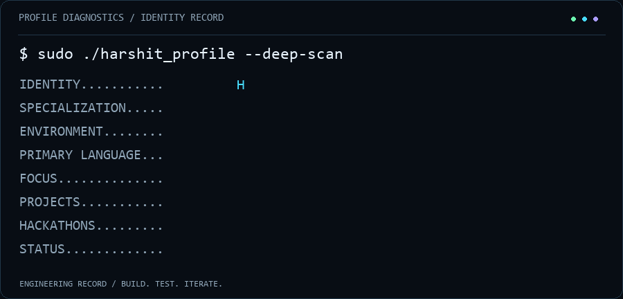
